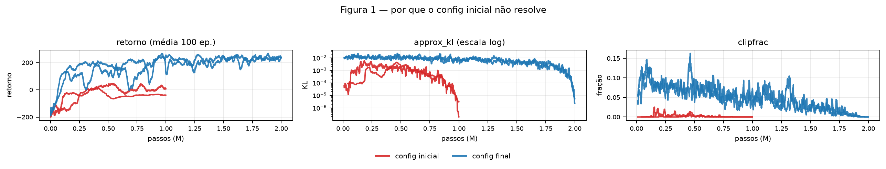
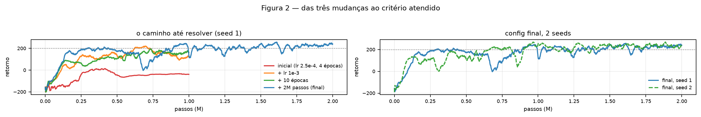
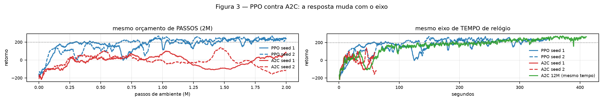

Com os defaults do CleanRL o agente chega a retorno −3,0 e 5,3 nas duas seeds.
O diagnóstico não está na curva de retorno, e sim nos dois gráficos novos do PPO: o
approx_kl fica em 0,00011 e o clipfrac em 0,0000 o treino
inteiro (Figura 1). Ou seja, dentro das 4 épocas de cada rollout a política praticamente não se
move, e o clipping, que é o mecanismo que dá nome ao algoritmo, nunca chega a atuar. O
explained_variance de 0,60 e 0,50 mostra que o crítico não era o problema.
| chave | de | para | motivo observado | efeito |
|---|---|---|---|---|
| ppo.learning_rate | 2,5e-4 | 1,0e-3 | approx_kl ~1e-4 e clipfrac 0: passo pequeno demais | −3 → 173 |
| ppo.update_epochs | 4 | 10 | o rollout seguia subaproveitado após o lr | 173 → 214 |
| total_timesteps | 1.000.000 | 2.000.000 | as duas seeds cruzavam 200 e recuavam | 214 → 240 |
A ordem importa e é o ponto principal desta parte. Dobrar o orçamento só funciona depois das
outras duas mudanças. Com o config quase original, 2M deram 175 contra 173 do 1M, ou seja, nada:
passo de ambiente desperdiçado. Com lr=1e-3 e 10 épocas, os mesmos 2M levam de 214 para
240. Além do volume, o 2M muda outra coisa: como o anneal_lr distribui a queda da taxa
ao longo do treino inteiro, dobrar o orçamento alonga a cauda de passo pequeno, e é nela que a
política boa se fixa em vez de ser destruída.

approx_kl está em escala log: a diferença entre os dois é de duas ordens de grandeza.
Runs no wandb, projeto ppo-assignment.Os diagnósticos confirmam o mecanismo. Do inicial para o final, o approx_kl sobe de
0,00011 para 0,0032 e o clipfrac de 0,0000 para 0,013: a política passou a
se mover de verdade e o clipping passou a atuar. O explained_variance subiu de 0,60 para
0,92 e a entropia caiu de 0,83 para 0,48, que é a política deixando de ser quase uniforme.
| tentativa | retorno | por que falhou |
|---|---|---|
| num_envs 4 → 16 (lote 2048) | −38,8 | Com orçamento de passos fixo, lote maior é menos atualização. O gargalo aqui nunca foi ruído de gradiente, e sim falta de movimento da política. |
| num_envs 4 → 8 (lote 1024) | 164 | |
| gamma 0,99 → 0,999 | 123 | Horizonte maior aumenta a variância do alvo e piora o crítico. |
| learning_rate 1e-3 → 5e-4 | 216 | Funciona, mas abaixo do 240. Mantido 1e-3. |
| gae_lambda 0,95 → 0,98 | 265 / 248 | O caso mais instrutivo. Melhora o retorno de treino nas duas seeds, mas piora a avaliação gulosa (231,5 e 203,5 contra 271,7 e 235,5) e triplica o desvio na seed 1 (76,9 contra 13,7). Quem lesse só a curva de retorno adotaria e entregaria pior. |
| seed | episodic_return_mean_last100 | eval/mean_return (10 ep.) | critério |
|---|---|---|---|
| 1 | 240 | 271,7 ± 13,7 | passa |
| 2 | 234 | 235,5 ± 111,5 | passa |
Critério atendido nas duas seeds, com 2M passos (o teto permitido). Uma ressalva honesta: o desvio da avaliação da seed 2 é 111,5 contra 13,7 da seed 1. A média passa, mas essa política ainda erra alguns pousos. É a mesma instabilidade que motivou o aumento do orçamento, atenuada e não eliminada.

O A2C é o nosso, da atividade anterior (a2c_lunarlander.yml: n=5, 16 ambientes), com o
orçamento reduzido de 12M para os 2M do PPO. Todos os runs desta seção foram executados em sequência,
nunca em paralelo, porque SPS e tempo de relógio perdem o sentido se os treinos disputam CPU.
| retorno final | passos até 0 | até 100 | até 200 | tempo | SPS | atualizações | |
|---|---|---|---|---|---|---|---|
| PPO seed 1 | 240 | 91k | 130k | 292k | 350 s | 5.588 | 156.240 |
| PPO seed 2 | 234 | 65k | 90k | 653k | 255 s | 6.578 | |
| A2C seed 1 | 82,6 | 248k | 1.034k | nunca | 60 s | 33.731 | 25.000 |
| A2C seed 2 | −115 | 232k | 529k | nunca | 64 s | 32.723 |
Para chegar a retorno 100 o PPO precisa de 90 a 130 mil passos e o A2C de 529 mil a 1,03 milhão,
uma diferença de 5 a 8 vezes. Em 200 a comparação acaba: o PPO chega entre 292 e 653 mil passos e o
A2C não chega nunca dentro dos 2M. O mecanismo é o reuso de amostras: dos mesmos 2M
passos de ambiente o PPO extrai 156.240 passos de gradiente (10 épocas × 4 minibatches por
rollout) contra 25.000 do A2C (um por rollout), 6,2 vezes mais. A razão de probabilidades e o
clipping são o que torna esse reuso seguro, e o clipfrac de 0,013 mostra que ele de fato
está contendo as amostras que se afastam demais.
Por passo de ambiente o A2C é cerca de 5 vezes mais rápido (33 mil contra 6 mil SPS), pela mesma razão: cada passo coletado custa 40 passos de gradiente no PPO e 1 no A2C. Os 2M do PPO levam 350 s e os do A2C, 60 s. A pergunta então é o que o A2C faria com os mesmos 350 s. Nós medimos isso: nessa janela ele percorre cerca de 11,6M passos, e o nosso run de 12M da atividade anterior estava em 239 de retorno aos 350 s, contra 240 do PPO. Com o mesmo tempo de relógio, empatam.

Entre seeds o PPO varia pouco no retorno (240 e 234) mas muito na avaliação (desvio 13,7 e 111,5); o A2C a 2M varia mais em tudo (82,6 e −115). Na Figura 3 à esquerda, as duas curvas do PPO têm quedas marcadas ao longo do treino, resquício da instabilidade da Parte 4.
A conclusão depende do recurso escasso, e é isso que torna a comparação interessante. Se o caro
é interagir com o ambiente, que é o caso de um robô real ou de um simulador pesado, o PPO é
claramente superior: resolve com 2M onde o A2C não chega. Se o caro é tempo de CPU e o ambiente
é barato, como o LunarLander, o A2C compensa a ineficiência amostral com volume e empata. Das quatro
mudanças do PPO, três (reuso de amostras, razão de probabilidades e clipping) explicam tanto a
vantagem amostral quanto o custo por passo; a quarta, o GAE, aparece no
explained_variance de 0,92 do crítico, bem acima do que o A2C alcançava com retorno de
n passos.